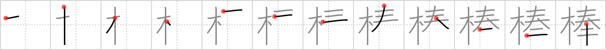

棒
← →
rod

Reading:
On-Yomi: ボウ
Heisig story:
Tree . . . dedicate.
Koohii stories:
1) [dingomick] 7-3-2007(224): Ha! If you know anything about Buddhist monks, during meditation, they're slapped with wooden rods to stay dedicated to their task.
2) [johnzep] 6-9-2007(74): The wood from this tree is dedicated to making rods to flog naughty kids.
3) [blackstockc] 16-1-2008(34): After crafting his rod from the finest tree in the land, Moses broke into a battle rap. "I dedicate this rod/ To the all mighty God!".
4) [eltjopoort] 10-11-2008(17): A rod is a piece of wood that is dedicated to a particular purpose… (use your imagination).
5) [mezbup] 25-6-2009(13): I dedicate this tree… to rod stuart. fuck knows why.